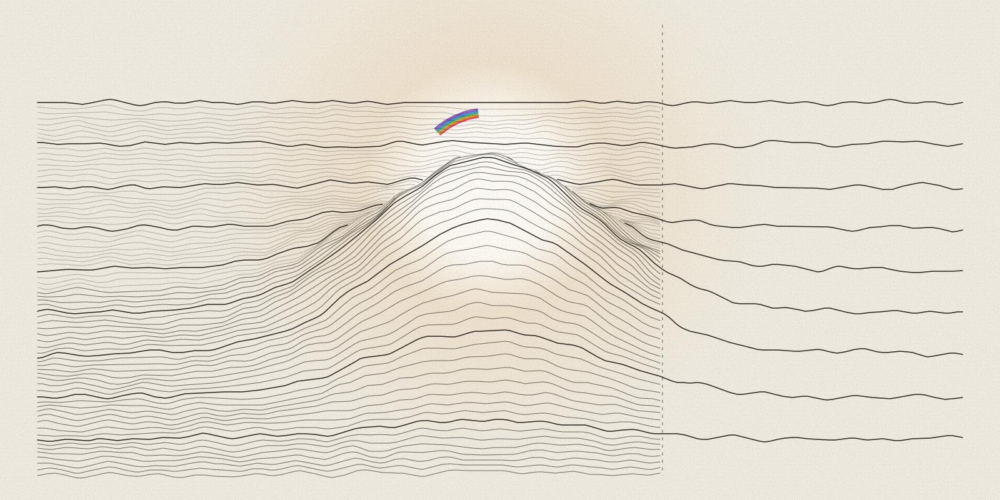

Essay · AI agents · verification
The Summary Is Not The Record
An argument for tools that keep a record of the claims, evidence, checks and actions behind AI-assisted work, and that say plainly when a claim cannot be checked.
Zain Dana Harper2026Public review draft

In short
When an AI agent finishes a job, all of its work gets compressed into a few clean paragraphs, and this essay argues that those paragraphs should not be the thing we trust. Before anyone asks for trust, the record behind them should be open to inspection: the claims, what the agent read and changed, and the checks that ran. The essay lays out a small public check that marks each claim as supported, no longer supported or impossible to check, and it asks you to send a case where that check fails.
The summary is not the record. I keep coming back to that sentence.
A model, the AI that writes the text, can produce a useful answer. An agent is an AI system that also takes actions. It can edit files, run other software, read pages, hand work to another agent, or change something beyond the computer it runs on. At the end, all of that gets compressed into a few clean paragraphs, which can be useful even though they should not be the thing we trust.
The gap
I am building Project Telos, my work on tools for reviewing what AI agents do, around the gap between an agent's summary and the record of what it did. Its subject is the work surface around the agent, where it reads, edits, runs tools and hands off work. The model weights, the numbers a model learns in training, sit outside its scope, and the project makes no grand promise that the system is safe.
A larger private system sits behind the work, and I am not releasing it. The pieces I am trying to bring into public view are bounded ones that should be safe and useful to inspect: verifier components, evidence formats, conformance examples and review packets. A verifier is a program that checks a claim against its evidence. A review packet bundles the claims, the evidence and the results so someone else can look.
A claim here means any statement the agent makes about its work that someone could check. After an agent acts, I want to be able to answer these questions:
- What did it claim?
- What did it read?
- What did it change?
- What checks ran?
- What evidence still supports the claim?
- What drifted? That is, which claims does the evidence no longer support?
- What was never verifiable in the first place?
Together they make up the proof-surface problem.
A lot of current AI-safety work happens at the model level. My question is narrower and less glamorous. After an agent acts, can we open the work?
The packet
The line between the work and the model weights matters to me because I do not want anyone to trust Telos on my word. If a public artifact is useful, it should be useful because another person can reopen it, run the check, find the missing edge and argue with the result.
For me, the useful packet has three honest outcomes:
- MATCH: the available evidence supports the claim.
- DRIFT: the evidence no longer supports the claim.
- UNVERIFIABLE: the system cannot honestly check the claim.
UNVERIFIABLE matters because unsupported claims should sound different from checked claims. When the system cannot prove something, I want it to say so plainly, without apology, and to count that answer as a useful result.
What this does not claim
This work is early infrastructure for review. It does not certify safety, perform an audit, claim compliance or claim an affiliation with Anthropic or AE Studio. The references at the end link to their published alignment work.
The public test
The practical version is modest:
- Collect the claims.
- Attach the evidence.
- Run the checks that can be run.
- Preserve route and action state.
- Mark MATCH, DRIFT, or UNVERIFIABLE.
- Produce a packet another person can inspect.
The goal is to make the work reopenable, whether or not the result looks clean.
A small cleanroom example is public here: Crucible Cleanroom Verdict Packet Demo. Cleanroom means the reviewer sees only the packet and never the agent's notes, chat or reasoning. Crucible is my claim-testing program. I kept the example narrow on purpose. It holds a single review packet and a downloadable bundle, and the page separates claims the evidence supports from claims the system must refuse to overstate.
What I am looking for
The larger private system may be ambitious. I want the public test small enough to audit and strict enough to refuse overclaiming. Another person should be able to re-check any claim in it. It should also stay boring, so a critic can say exactly where it breaks.
I care about this because AI-assisted work is starting to touch real surfaces: code repositories, releases, benchmark claims (claims about how a model scored on a standard test), security reviews, customer demos, governance packets, internal tools and public pages. The more capable the agent becomes, the less acceptable it is for the final summary to be the only lasting account of what happened. Before anyone asks for trust, the evidence should be open to inspection.
I am looking for failure cases, not applause. These are the cases I would like to see:
- Agent-tool builders: a workflow where the trace exists and the review story is still weak. A trace is the log of each step the agent took.
- Open-source maintainers: a release claim, a benchmark claim, an issue (a reported problem) or an AI-generated patch (a code change written by an AI) where someone should be able to ask what exactly was checked.
- People who work near provenance, security, governance, risk and compliance (GRC), or standards: criticism of the verifier boundary, the line that sets what the verifier looks at and what it leaves out. Provenance is the record of where a piece of work came from. Tell me what belongs in the packet, what should stay outside it, and where the trust boundary needs to stay visible.
I need examples from outside my own work. Months of internal testing can prepare the idea, but it cannot prove the idea survives contact with someone else's repository, workflow or release claim.
I wrote a short public intake note for that: send a small proof-surface test case. Keep it public and narrow. Do not send secrets or private data.
Build with a model. Take nothing on faith.
References
This page contains no secrets, client data or material from the private system. Back to Writing.